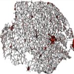

|  |
NorfolkBy Kurtis Garbutt |
The simulation starts by reading GIS data describing the road network of Norfolk. The simulation reads a .CSV file and places agents on the road network and assigns them destinations. The agents then head towards their destinations. Once they arrive, they return to their start points.